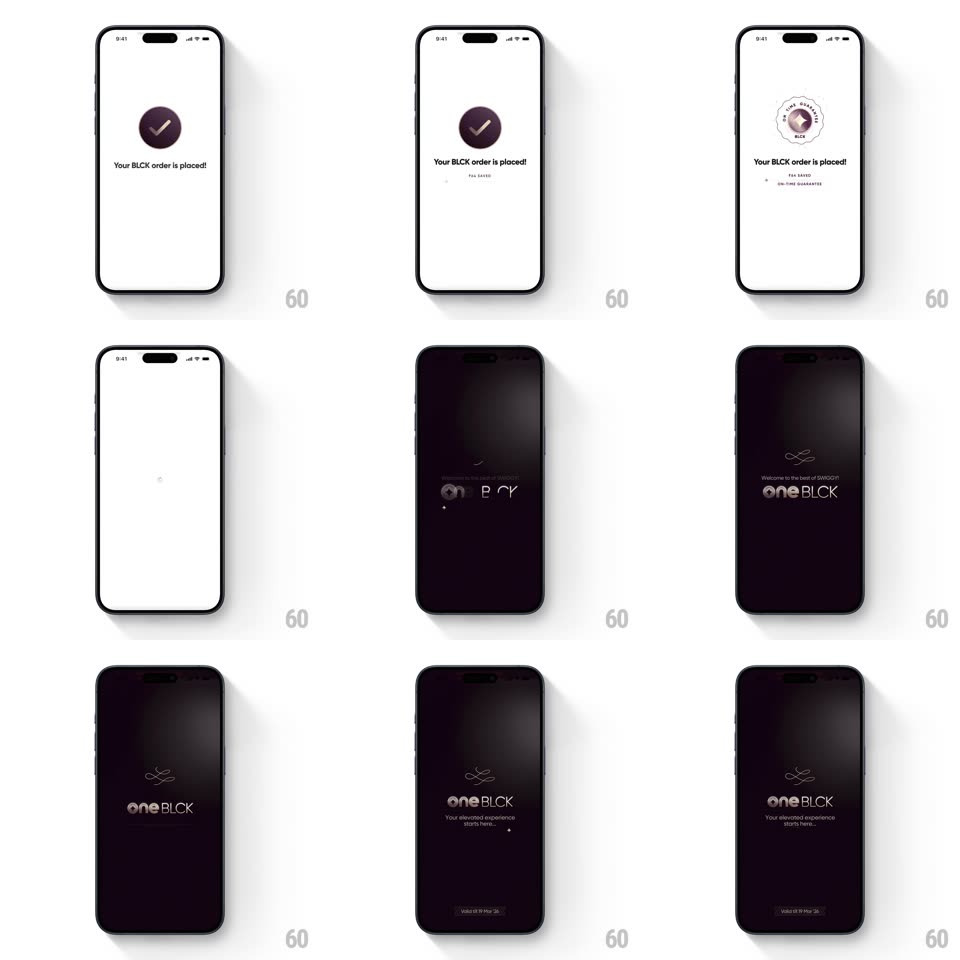

Media
Frame-by-frame

Rebuild this animation 1:1: Swiggy BLCK's post-order transition - the white "Your BLCK order is placed!" confirmation dissolves into a dark, metallic-shimmered oneBLCK welcome splash.

Rebuild this animation 1:1: Swiggy BLCK's post-order transition - the white "Your BLCK order is placed!" confirmation dissolves into a dark, metallic-shimmered oneBLCK welcome splash. ## Integration Integration: stack-agnostic spec - springs given as stiffness/damping, timed motions as duration + curve; map every value to your framework and animation library of choice. ## Scene Stage 1 (white): a circular token spinner resolves into a purple check circle, "Your BLCK order is placed!" in bold, with small "PAN SAVED" and "ON-TIME GUARANTEE" captions beneath a spinning disc. Stage 2 (near-black): "Welcome to the best of SWIGGY" in small caps above the large metallic "oneBLCK" wordmark, the line "Your elevated experience starts here", and a dark CTA at the bottom. ## Motion spec Pattern: multi-stage transition from bright order confirmation to dark premium welcome. - Stage 1: the token circle spins and morphs into the purple check (check stroke draws, 300ms); the headline fades up (12px rise, 350ms), then the two caption lines (150ms apart), and the disc behind keeps rotating slowly (8s per turn). - After ~1.8s the whole white stage dims as a dark gradient sweeps down from the top (500ms ease-in-out), taking the screen to near-black. - Stage 2 elements arrive in order on the dark: the small "Welcome to the best of SWIGGY" fades in (300ms), then the "oneBLCK" wordmark fades up (16px rise, 400ms) with a metallic shimmer sweeping left-to-right across the letters (700ms, mask highlight), then the tagline and CTA (200ms apart). - The shimmer loops subtly every ~4s on the wordmark only. - The purple of the check is the only color carried into the dark stage - everything else stays monochrome metallic. ## Calibration - The dark sweep is a gradient wipe, not a hard cut - the two worlds must feel poured into each other. - The metallic sheen is a moving highlight mask over the letterforms, never an overlay gleam on the whole screen. ## Reduced motion Single 300ms crossfade between stages; static wordmark, no shimmer. ## Don't miss - Stage 1 stays airy and white with generous whitespace - the contrast with the dark welcome is the point. - The wordmark is "oneBLCK" in mixed case with the BLCK half heavier - never all-caps it.